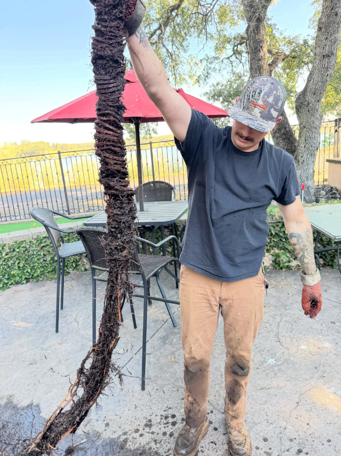
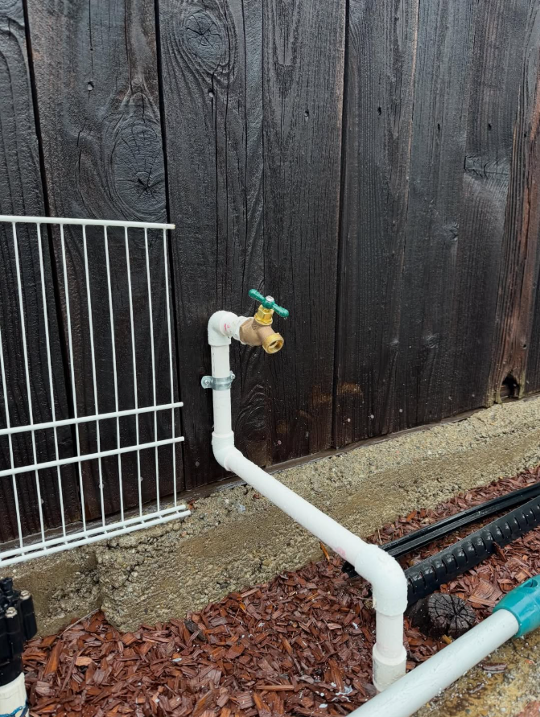
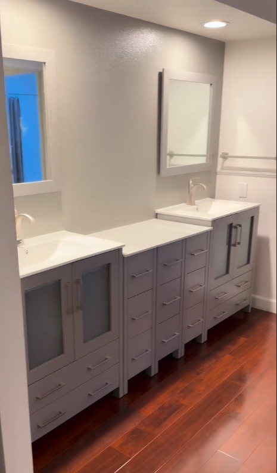
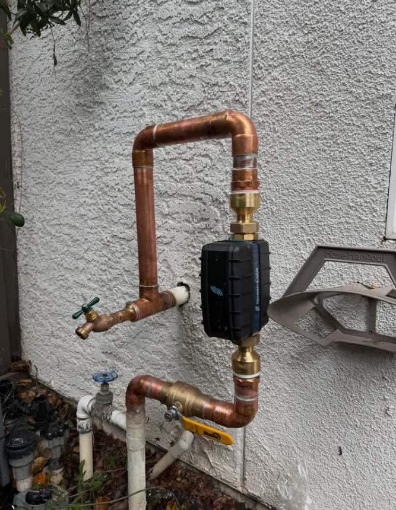
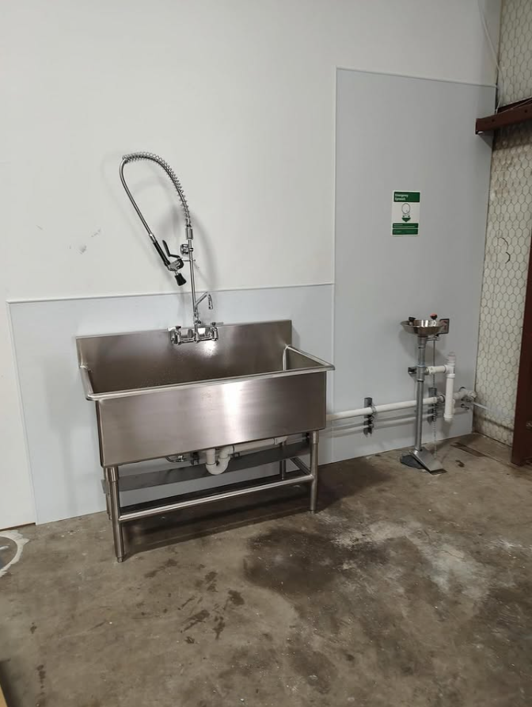

Plumbing without the runaround.
Repairs, replacements, drains, water heaters and fixture work across Sacramento. Real workmanship, clear communication and same-day service when availability allows.
Built for the plumbing jobs people actually call about.
A focused service lineup, presented without clutter. From a clogged line to a full water-heater replacement, the site gets visitors to the right service fast.
Drain & Sewer
Clogs, root intrusion, drain clearing and sewer troubleshooting.
Water Heaters
Tank and tankless repair, replacement, installation and flushing.
Fixtures & Toilets
Faucets, sinks, toilets, bidets and clean fixture upgrades.
Pipe & Leak Repair
Leak diagnosis, piping repairs, valves and water-line work.
Commercial Plumbing
Utility sinks, fixtures, lines and practical commercial plumbing work.
Installations
Plumbing installs for remodels, upgrades and replacements.
See the quality before you call.
A look at recent drain, water-heater, fixture and installation work completed by Straight Forward Plumbing around the Sacramento area.






Serving Sacramento & surrounding areas.
Each major city has its own crawlable page with unique local copy, service context and internal links instead of swapping only the city name.